性能及稳定性
在使用etcd的过程中，你是否吐槽过etcd性能差呢？ 我们知道，etcd社区线性读 压测结果 可以达到14w/s，那为什么在实际业务场景中有时却只有几千，甚至几百、几十，还会偶发超时、频繁抖动呢？
我相信不少人都遇到过类似的问题。要解决这些问题，不仅需要了解症结所在，还需要掌握优化和扩展etcd性能的方法，对症下药。因为这部分内容比较多，所以我分成了两讲内容，分别从读性能、写性能和稳定性入手，为你详细讲解如何优化及扩展etcd性能及稳定性。
希望通过这两节课的学习，能让你在使用etcd的时候，设计出良好的业务存储结构，遵循最佳实践，让etcd稳定、高效地运行，获得符合预期的性能。同时，当你面对etcd性能瓶颈的时候，也能自己分析瓶颈原因、选择合适的优化方案解决它，而不是盲目甩锅etcd，甚至更换技术方案去etcd化。
我们说读性能差，其实本质是读请求链路中某些环节出现了瓶颈。所以，接下来我将通过一张读性能分析链路图，为你从上至下分析影响etcd性能、稳定性的若干因素，并给出相应的压测数据，最终为你总结出一系列的etcd性能优化和扩展方法。
性能分析链路
为什么在你的业务场景中读性能不如预期呢？ 是读流程中的哪一个环节出现了瓶颈？
在下图中，我为你总结了一个开启密码鉴权场景的读性能瓶颈分析链路图，并在每个核心步骤数字旁边，标出了影响性能的关键因素。我之所以选用密码鉴权的读请求为案例，是因为它使用较广泛并且请求链路覆盖最全，同时它也是最容易遇到性能瓶颈的场景。
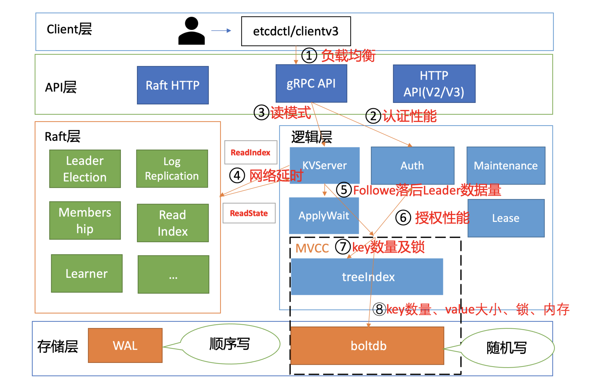
接下来我将按照这张链路分析图，带你深入分析一个使用密码鉴权的线性读请求，和你一起看看影响它性能表现的核心因素以及最佳优化实践。
负载均衡
首先是流程一负载均衡。在etcd 3.4以前，client为了节省与server节点的连接数，clientv3负载均衡器最终只会选择一个sever节点IP，与其建立一个长连接。
但是这可能会导致对应的server节点过载（如单节点流量过大，出现丢包）， 其他节点却是低负载，最终导致业务无法获得集群的最佳性能。在etcd 3.4后，引入了Round-robin负载均衡算法，它通过轮询的方式依次从endpoint列表中选择一个endpoint访问(长连接)，使server节点负载尽量均衡。
所以，如果你使用的是etcd低版本，那么我建议你通过Load Balancer访问后端etcd集群。因为一方面Load Balancer一般支持配置各种负载均衡算法，如连接数、Round-robin等，可以使你的集群负载更加均衡，规避etcd client早期的固定连接缺陷，获得集群最佳性能。
另一方面，当你集群节点需要替换、扩缩容集群节点的时候，你不需要去调整各个client访问server的节点配置。
选择合适的鉴权
client通过负载均衡算法为请求选择好etcd server节点后，client就可调用server的Range RPC方法，把请求发送给etcd server。在此过程中，如果server启用了鉴权，那么就会返回无权限相关错误给client。
如果server使用的是密码鉴权，你在创建client时，需指定用户名和密码。etcd clientv3库发现用户名、密码非空，就会先校验用户名和密码是否正确。
client是如何向sever请求校验用户名、密码正确性的呢？
client是通过向server发送Authenticate RPC鉴权请求实现密码认证的，也就是图中的流程二。
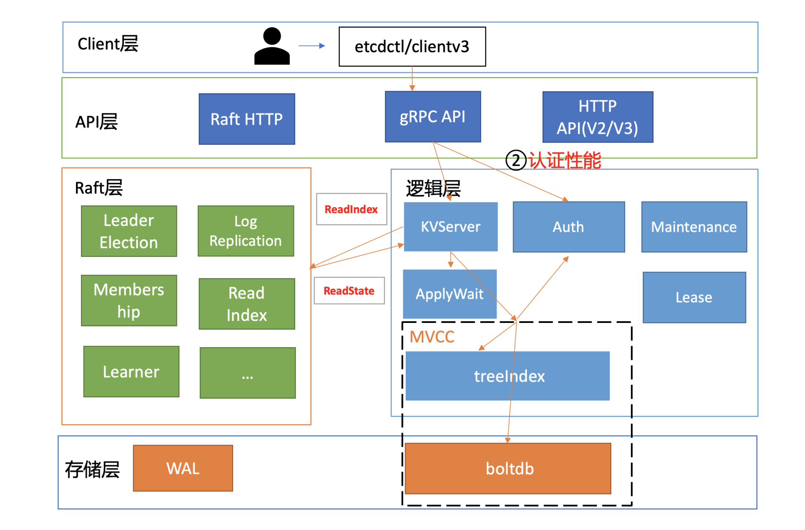
根据我们 05 介绍的密码认证原理，server节点收到鉴权请求后，它会从boltdb获取此用户密码对应的算法版本、salt、cost值，并基于用户的请求明文密码计算出一个hash值。
在得到hash值后，就可以对比db里保存的hash密码是否与其一致了。如果一致，就会返回一个token给client。 这个token是client访问server节点的通行证，后续server只需要校验“通行证”是否有效即可，无需每次发起昂贵的Authenticate RPC请求。
讲到这里，不知道你有没有意识到，若你的业务在访问etcd过程中未复用token，每次访问etcd都发起一次Authenticate调用，这将是一个非常大的性能瓶颈和隐患。因为正如我们05所介绍的，为了保证密码的安全性，密码认证（Authenticate）的开销非常昂贵，涉及到大量CPU资源。
那这个Authenticate接口究竟有多慢呢？
为了得到Authenticate接口的性能，我们做过这样一个测试：
- 压测集群etcd节点配置是16核32G；
- 压测方式是我们通过修改etcd clientv3库、benchmark工具，使benchmark工具支持Authenticate接口压测；
- 然后设置不同的client和connection参数，运行多次，观察结果是否稳定，获取测试结果。
最终的测试结果非常惊人。etcd v3.4.9之前的版本，Authenticate接口性能不到16 QPS，并且随着client和connection增多，该性能会继续恶化。
当client和connection的数量达到200个的时候，性能会下降到8 QPS，P99延时为18秒，如下图所示。
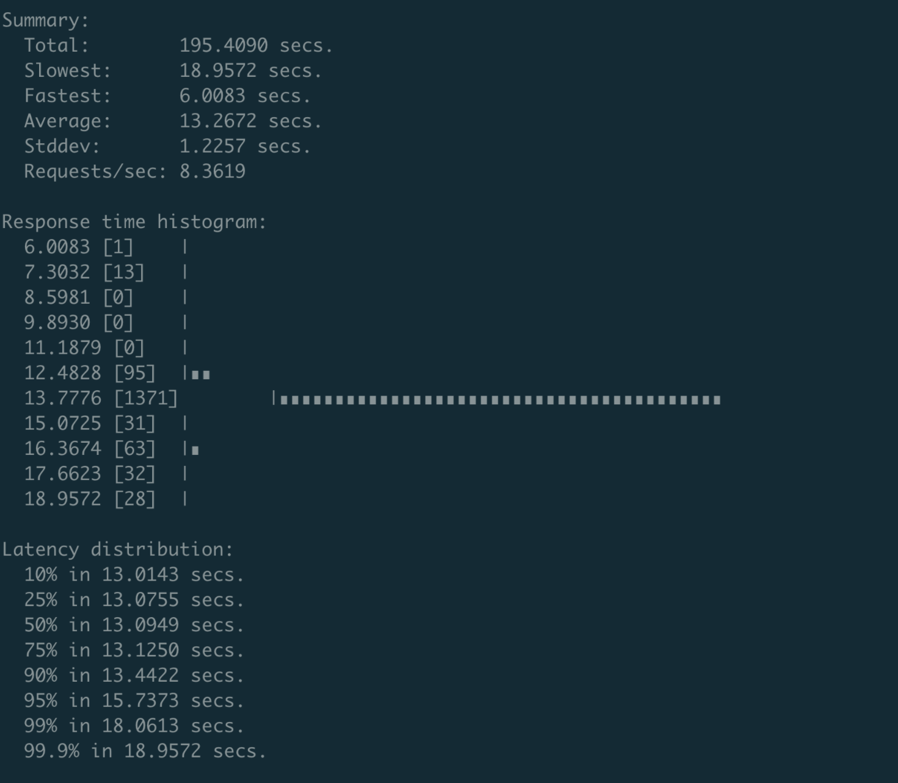
对此，我和小伙伴王超凡通过一个 减少锁的范围PR（该PR已经cherry-pick到了etcd 3.4.9版本），将性能优化到了约200 QPS，并且P99延时在1秒内，如下图所示。
由于导致Authenticate接口性能差的核心瓶颈，是在于密码鉴权使用了bcrpt计算hash值，因此Authenticate性能已接近极限。
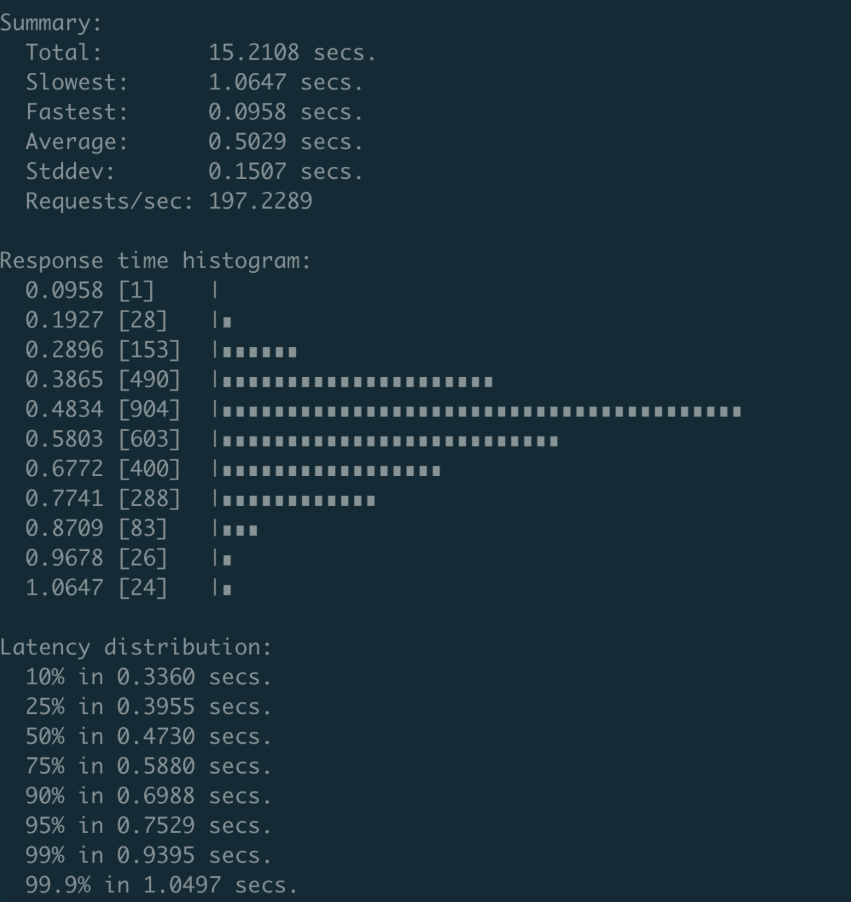
最令人头疼的是，Auenticate的调用由clientv3库默默发起的，etcd中也没有任何日志记录其耗时等。当大家开启密码鉴权后，遇到读写接口超时的时候，未详细了解etcd的同学就会非常困惑，很难定位超时本质原因。
我曾多次收到小伙伴的求助，协助他们排查etcd异常超时问题。通过metrics定位，我发现这些问题大都是由比较频繁的Authenticate调用导致，只要临时关闭鉴权或升级到etcd v3.4.9版本就可以恢复。
为了帮助大家快速发现Authenticate等特殊类型的expensive request，我在etcd 3.5版本中提交了一个PR，通过gRPC拦截器的机制，当一个请求超过300ms时，就会打印整个请求信息。
讲到这里，你应该会有疑问，密码鉴权的性能如此差，可是业务又需要使用它，我们该怎么解决密码鉴权的性能问题呢？对此，我有三点建议。
第一，如果你的生产环境需要开启鉴权，并且读写QPS较大，那我建议你不要图省事使用密码鉴权。最好使用证书鉴权，这样能完美避坑认证性能差、token过期等问题，性能几乎无损失。
第二，确保你的业务每次发起请求时有复用token机制，尽可能减少Authenticate RPC调用。
第三，如果你使用密码鉴权时遇到性能瓶颈问题，可将etcd升级到3.4.9及以上版本，能适当提升密码鉴权的性能。
选择合适的读模式
client通过server的鉴权后，就可以发起读请求调用了，也就是我们图中的流程三。
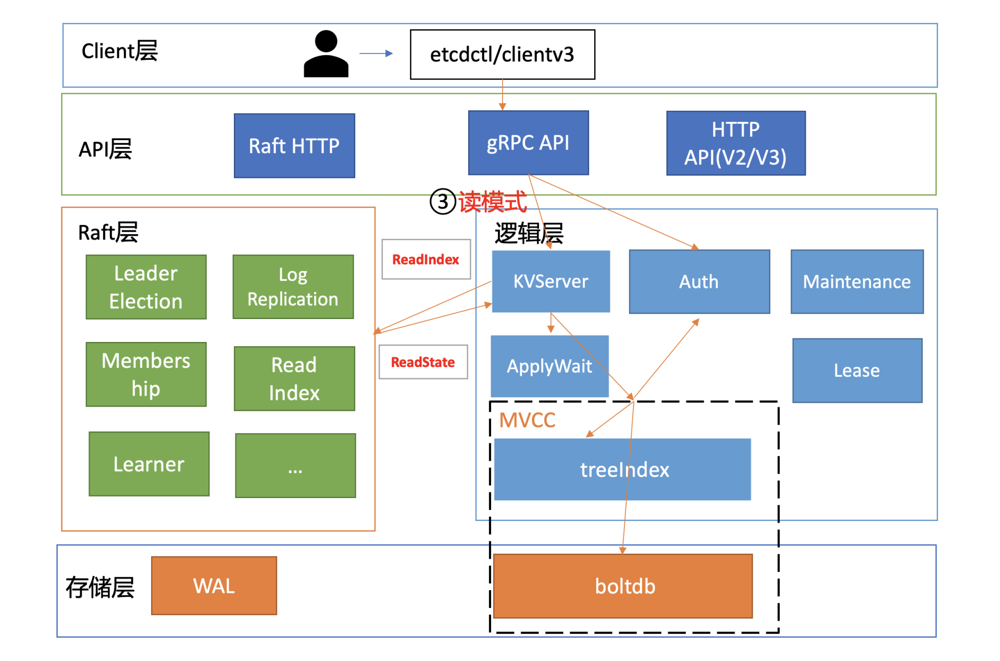
在这个步骤中，读模式对性能有着至关重要的影响。我们前面讲过etcd提供了串行读和线性读两种读模式。前者因为不经过ReadIndex模块，具有低延时、高吞吐量的特点；而后者在牺牲一点延时和吞吐量的基础上，实现了数据的强一致性读。这两种读模式分别为不同场景的读提供了解决方案。
关于串行读和线性读的性能对比，下图我给出了一个测试结果，测试环境如下：
- 机器配置client 16核32G，三个server节点8核16G、SSD盘，client与server节点都在同可用区；
- 各节点之间RTT在0.1ms到0.2ms之间；
- etcd v3.4.9版本；
- 1000个client。
执行如下串行读压测命令：
benchmark --endpoints=addr --conns=100 --clients=1000 \
range hello --consistency=s --total=500000
得到串行读压测结果如下，32万 QPS，平均延时2.5ms。
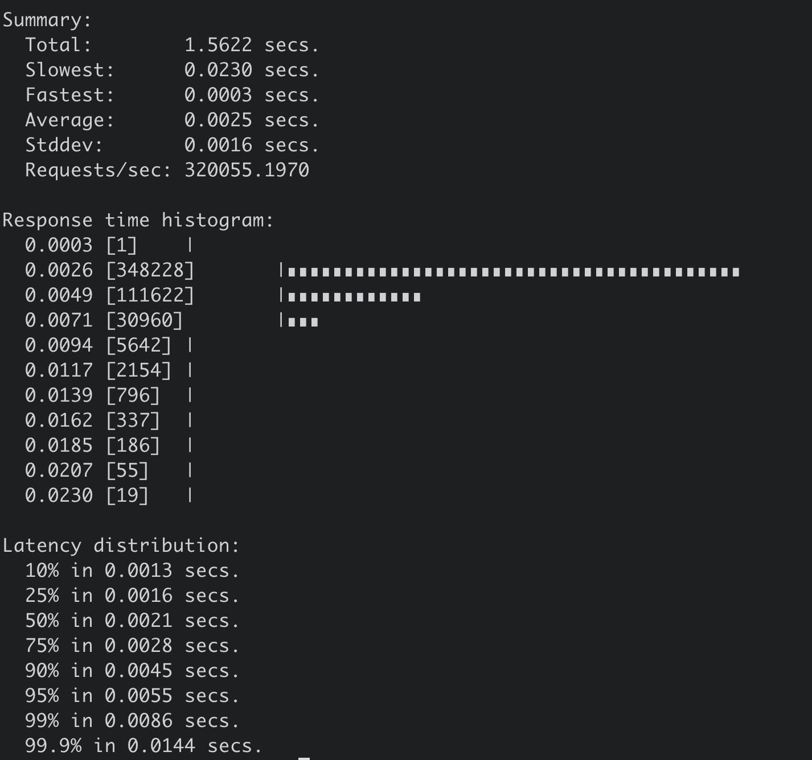
执行如下线性读压测命令：
benchmark --endpoints=addr --conns=100 --clients=1000 \
range hello --consistency=l --total=500000
得到线性读压测结果如下，19万 QPS，平均延时4.9ms。
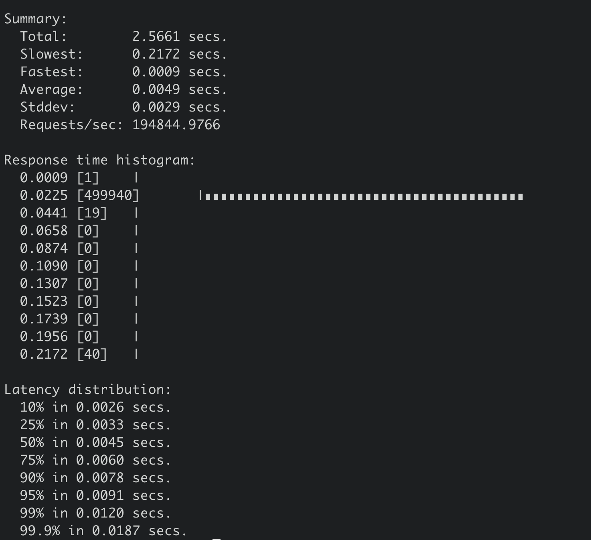
从两个压测结果图中你可以看到，在100个连接时，串行读性能比线性读性能高近11万/s，串行读请求延时（2.5ms）比线性读延时约低一半（4.9ms）。
需要注意的是，以上读性能数据是在1个key、没有任何写请求、同可用区的场景下压测出来的，实际的读性能会随着你的写请求增多而出现显著下降，这也是实际业务场景性能与社区压测结果存在非常大差距的原因之一。 所以，我建议你使用etcd benchmark工具在你的etcd集群环境中自测一下，你也可以参考下面的 etcd社区压测结果。
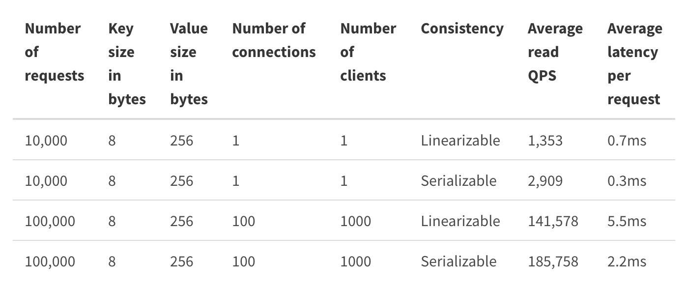
如果你的业务场景读QPS较大，但是你又不想通过etcd proxy等机制来扩展性能，那你可以进一步评估业务场景对数据一致性的要求高不高。如果你可以容忍短暂的不一致，那你可以通过串行读来提升etcd的读性能，也可以部署Learner节点给可能会产生expensive read request的业务使用，实现cheap/expensive read request隔离。
线性读实现机制、网络延时
了解完读模式对性能的影响后，我们继续往下分析。在我们这个密码鉴权读请求的性能分析案例中，读请求使用的是etcd默认线性读模式。线性读对应图中的流程四、流程五，其中流程四对应的是ReadIndex，流程五对应的是等待本节点数据追上Leader的进度（ApplyWait）。
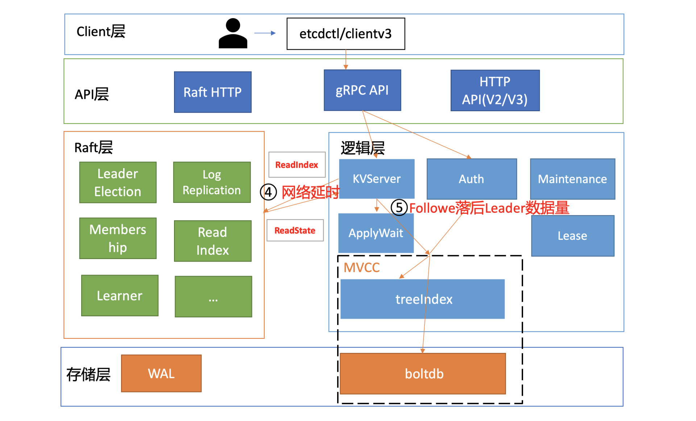
在早期的etcd 3.0版本中，etcd线性读是基于Raft log read实现的。每次读请求要像写请求一样，生成一个Raft日志条目，然后提交给Raft一致性模块处理，基于Raft日志执行的有序性来实现线性读。因为该过程需要经过磁盘I/O，所以性能较差。
为了解决Raft log read的线性读性能瓶颈，etcd 3.1中引入了ReadIndex。ReadIndex仅涉及到各个节点之间网络通信，因此节点之间的RTT延时对其性能有较大影响。虽然同可用区可获取到最佳性能，但是存在单可用区故障风险。如果你想实现高可用区容灾的话，那就必须牺牲一点性能了。
跨可用区部署时，各个可用区之间延时一般在2毫秒内。如果跨城部署，服务性能就会下降较大。所以一般场景下我不建议你跨城部署，你可以通过Learner节点实现异地容灾。如果异地的服务对数据一致性要求不高，那么你甚至可以通过串行读访问Learner节点，来实现就近访问，低延时。
各个节点之间的RTT延时，是决定流程四ReadIndex性能的核心因素之一。
磁盘IO性能、写QPS
到了流程五，影响性能的核心因素就是磁盘IO延时和写QPS。
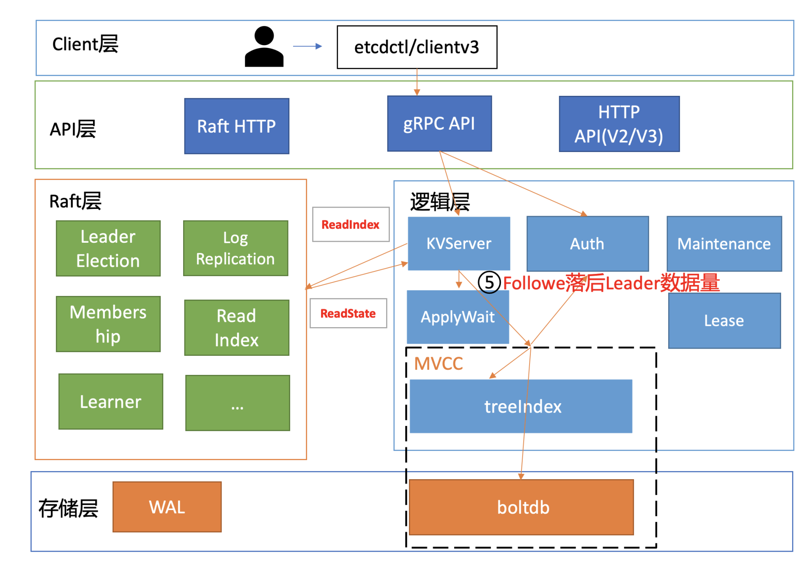
如下面代码所示，流程五是指节点从Leader获取到最新已提交的日志条目索引(rs.Index)后，它需要等待本节点当前已应用的Raft日志索引，大于等于Leader的已提交索引，确保能在本节点状态机中读取到最新数据。
if ai := s.getAppliedIndex(); ai < rs.Index {
select {
case <-s.applyWait.Wait(rs.Index):
case <-s.stopping:
return
}
}
// unblock all l-reads requested at indices before rs.Index
nr.notify(nil)
而应用已提交日志条目到状态机的过程中又涉及到随机写磁盘，详情可参考我们 03 中介绍过etcd的写请求原理。
因此我们可以知道， etcd是一个对磁盘IO性能非常敏感的存储系统，磁盘IO性能不仅会影响Leader稳定性、写性能表现，还会影响读性能。线性读性能会随着写性能的增加而快速下降。如果业务对性能、稳定性有较大要求，我建议你尽量使用SSD盘。
下表我给出了一个8核16G的三节点集群，在总key数只有一个的情况下，随着写请求增大，线性读性能下降的趋势总结（基于benchmark工具压测结果），你可以直观感受下读性能是如何随着写性能下降。
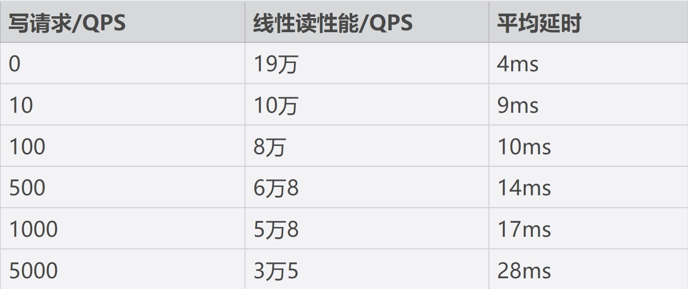
当本节点已应用日志条目索引大于等于Leader已提交的日志条目索引后，读请求就会接到通知，就可通过MVCC模块获取数据。
RBAC规则数、Auth锁
读请求到了MVCC模块后，首先要通过鉴权模块判断此用户是否有权限访问请求的数据路径，也就是流程六。影响流程六的性能因素是你的RBAC规则数和锁。
首先是RBAC规则数，为了解决快速判断用户对指定key范围是否有权限，etcd为每个用户维护了读写权限区间树。基于区间树判断用户访问的范围是否在用户的读写权限区间内，时间复杂度仅需要O(logN)。
另外一个因素则是AuthStore的锁。在etcd 3.4.9之前的，校验密码接口可能会占用较长时间的锁，导致授权接口阻塞。etcd 3.4.9之后合入了缩小锁范围的PR，可一定程度降低授权接口被阻塞的问题。
expensive request、treeIndex锁
通过流程六的授权后，则进入流程七，从treeIndex中获取整个查询涉及的key列表版本号信息。在这个流程中，影响其性能的关键因素是treeIndex的总key数、查询的key数、获取treeIndex锁的耗时。
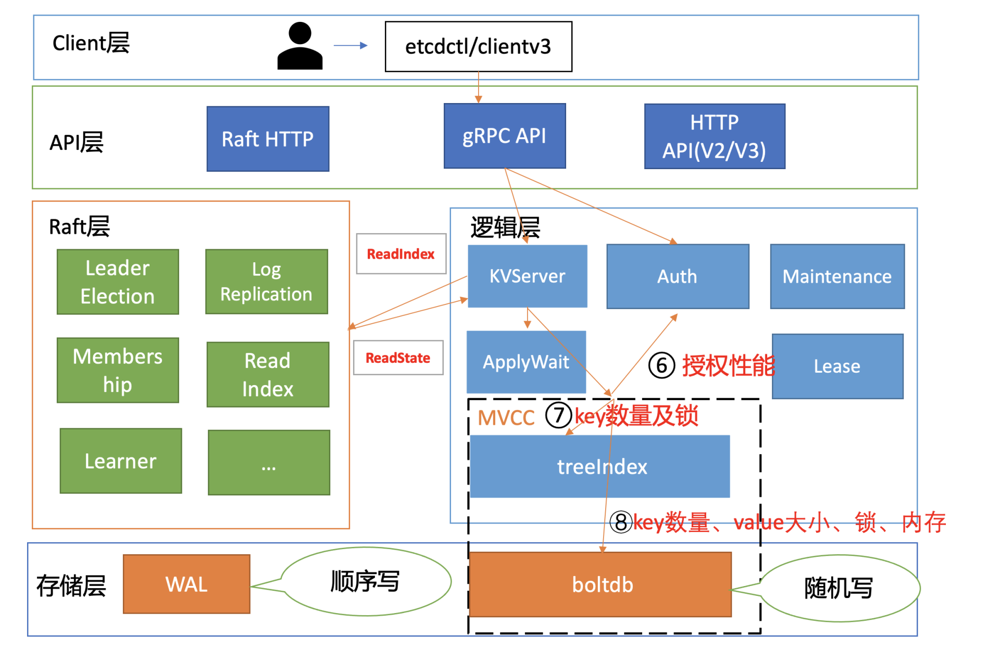
首先，treeIndex中总key数过多会适当增大我们遍历的耗时。
其次，若要访问treeIndex我们必须获取到锁，但是可能其他请求如compact操作也会获取锁。早期的时候，它需要遍历所有索引，然后进行数据压缩工作。这就会导致其他请求阻塞，进而增大延时。
为了解决这个性能问题，优化方案是compact的时候会将treeIndex克隆一份，以空间来换时间，尽量降低锁阻塞带来的超时问题。
接下来我重点给你介绍下查询key数较多等expensive read request时对性能的影响。
假设我们链路分析图中的请求是查询一个Kubernetes集群所有Pod，当你Pod数一百以内的时候可能对etcd影响不大，但是当你Pod数千甚至上万的时候， 流程七、八就会遍历大量的key，导致请求耗时突增、内存上涨、性能急剧下降。你可结合 13 db大小、 14 延时、 15 内存三节一起看看，这里我就不再重复描述。
如果业务就是有这种expensive read request逻辑，我们该如何应对呢？
首先我们可以尽量减少expensive read request次数，在程序启动的时候，只List一次全量数据，然后通过etcd Watch机制去获取增量变更数据。比如Kubernetes的Informer机制，就是典型的优化实践。
其次，在设计上评估是否能进行一些数据分片、拆分等，不同场景使用不同的etcd prefix前缀。比如在Kubernetes中，不要把Pod全部都部署在default命名空间下，尽量根据业务场景按命名空间拆分部署。即便每个场景全量拉取，也只需要遍历自己命名空间下的资源，数据量上将下降一个数量级。
再次，如果你觉得Watch改造大、数据也无法分片，开发麻烦，你可以通过分页机制按批拉取，尽量减少一次性拉取数万条数据。
最后，如果以上方式都不起作用的话，你还可以通过引入cache实现缓存expensive read request的结果，不过应用需维护缓存数据与etcd的一致性。
大key-value、boltdb锁
从流程七获取到key列表及版本号信息后，我们就可以访问boltdb模块，获取key-value信息了。在这个流程中，影响其性能表现的，除了我们上面介绍的expensive read request，还有大key-value和锁。
首先是大key-value。我们知道etcd设计上定位是个小型的元数据存储，它没有数据分片机制，默认db quota只有2G，实践中往往不会超过8G，并且针对每个key-value大小，它也进行了大小限制，默认是1.5MB。
大key-value非常容易导致etcd OOM、server 节点出现丢包、性能急剧下降等。
那么当我们往etcd集群写入一个1MB的key-value时，它的线性读性能会从17万QPS具体下降到多少呢?
我们可以执行如下benchmark命令：
benchmark --endpoints=addr --conns=100 --clients=1000 \
range key --consistency=l --total=10000
得到其结果如下，从下图你可以看到，读取一个1MB的key-value，线性读性能QPS下降到1163，平均延时上升到818ms，可见大key-value对性能的巨大影响。
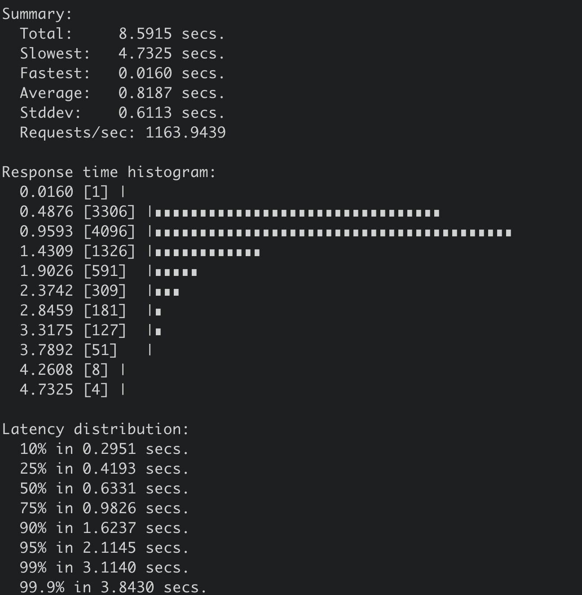
同时，从下面的etcd监控图上你也可以看到内存出现了突增，若存在大量大key-value时，可想而知，etcd内存肯定暴涨，大概率会OOM。
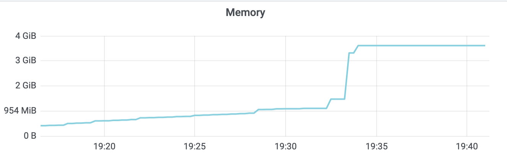
其次是锁，etcd为了提升boltdb读的性能，从etcd 3.1到etcd 3.4版本，分别进行过几次重大优化，在下一节中我将和你介绍。
以上就是一个开启密码鉴权场景，线性读请求的性能瓶颈分析过程。
我们继续来看如何优化及扩展etcd性能。上一节课里我为你重点讲述了如何提升读的性能，今天我将重点为你介绍如何提升写性能和稳定性，以及如何基于etcd gRPC Proxy扩展etcd性能。
当你使用etcd写入大量key-value数据的时候，是否遇到过etcd server返回"etcdserver: too many requests"错误？这个错误是怎么产生的呢？我们又该如何来优化写性能呢？
这节课我将通过写性能分析链路图，为你从上至下分析影响写性能、稳定性的若干因素，并为你总结出若干etcd写性能优化和扩展方法。
性能分析链路
为什么你写入大量key-value数据的时候，会遇到Too Many Request限速错误呢？ 是写流程中的哪些环节出现了瓶颈？
和读请求类似，我为你总结了一个开启鉴权场景的写性能瓶颈及稳定性分析链路图，并在每个核心步骤数字旁边标识了影响性能、稳定性的关键因素。
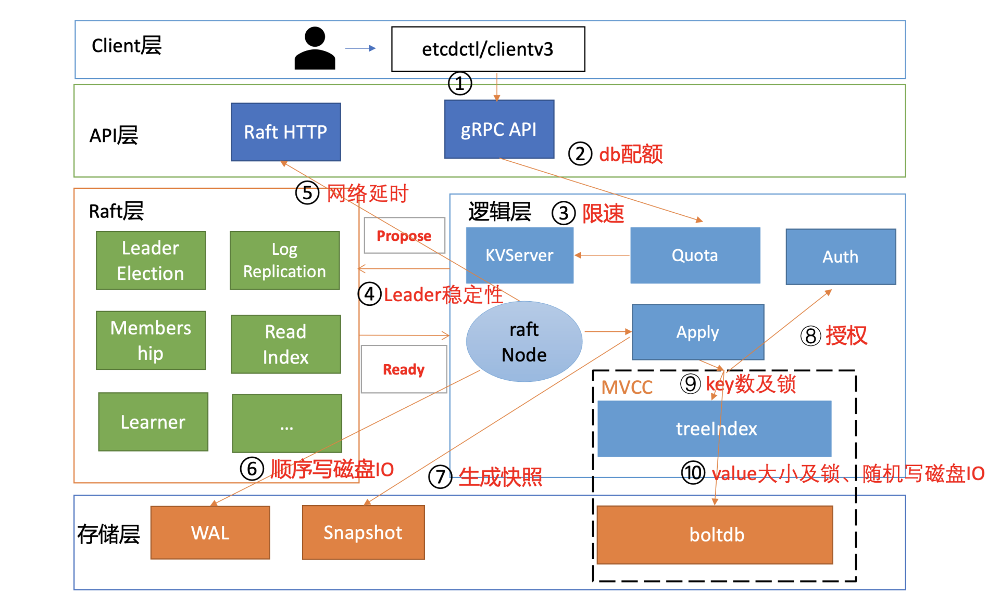
下面我将按照这个写请求链路分析图，和你深入分析影响etcd写性能的核心因素和最佳优化实践。
db quota
首先是流程一。在etcd v3.4.9版本中，client会通过clientv3库的Round-robin负载均衡算法，从endpoint列表中轮询选择一个endpoint访问，发起gRPC调用。
然后进入流程二。etcd收到gRPC写请求后，首先经过的是Quota模块，它会影响写请求的稳定性，若db大小超过配额就无法写入。
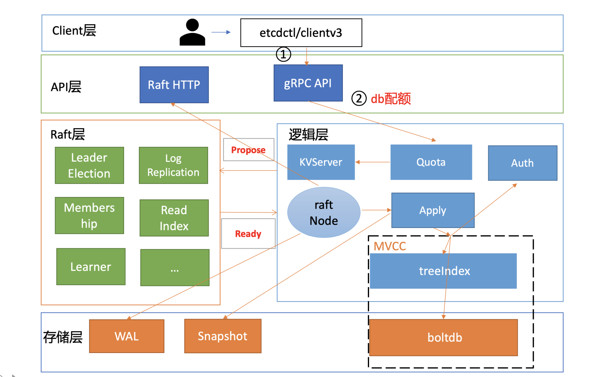
etcd是个小型的元数据存储，默认db quota大小是2G，超过2G就只读无法写入。因此你需要根据你的业务场景，适当调整db quota大小，并配置的合适的压缩策略。
正如我在 11 里和你介绍的，etcd支持按时间周期性压缩、按版本号压缩两种策略，建议压缩策略不要配置得过于频繁。比如如果按时间周期压缩，一般情况下5分钟以上压缩一次比较合适，因为压缩过程中会加一系列锁和删除boltdb数据，过于频繁的压缩会对性能有一定的影响。
一般情况下db大小尽量不要超过8G，过大的db文件和数据量对集群稳定性各方面都会有一定的影响，详细你可以参考 13。
限速
通过流程二的Quota模块后，请求就进入流程三KVServer模块。在KVServer模块里，影响写性能的核心因素是限速。
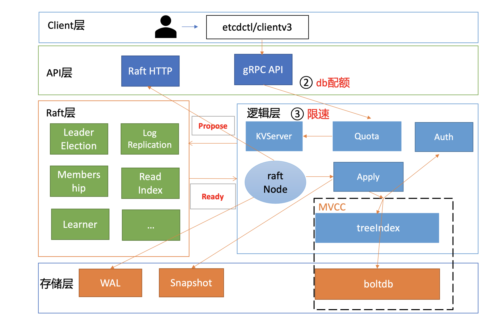
KVServer模块的写请求在提交到Raft模块前，会进行限速判断。如果Raft模块已提交的日志索引（committed index）比已应用到状态机的日志索引（applied index）超过了5000，那么它就返回一个"etcdserver: too many requests"错误给client。
那么哪些情况可能会导致committed Index远大于applied index呢?
首先是long expensive read request导致写阻塞。比如etcd 3.4版本之前长读事务会持有较长时间的buffer读锁，而写事务又需要升级锁更新buffer，因此出现写阻塞乃至超时。最终导致etcd server应用已提交的Raft日志命令到状态机缓慢。堆积过多时，则会触发限速。
其次etcd定时批量将boltdb写事务提交的时候，需要对B+ tree进行重平衡、分裂，并将freelist、dirty page、meta page持久化到磁盘。此过程需要持有boltdb事务锁，若磁盘随机写性能较差、瞬间大量写入，则也容易写阻塞，应用已提交的日志条目缓慢。
最后执行defrag等运维操作时，也会导致写阻塞，它们会持有相关锁，导致写性能下降。
心跳及选举参数优化
写请求经过KVServer模块后，则会提交到流程四的Raft模块。我们知道etcd写请求需要转发给Leader处理，因此影响此模块性能和稳定性的核心因素之一是集群Leader的稳定性。
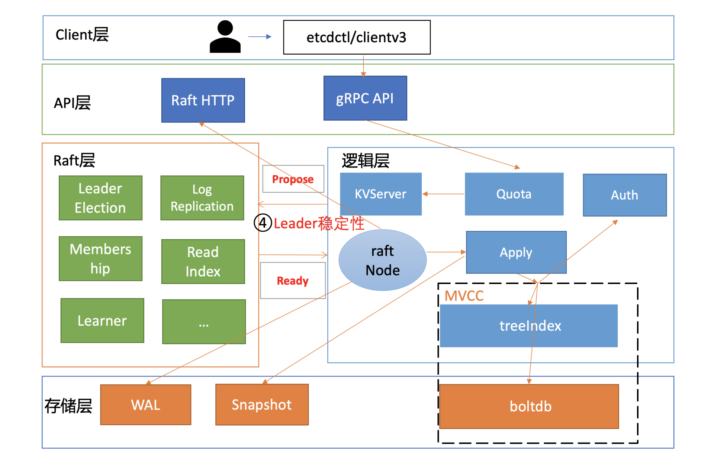
那如何判断Leader的稳定性呢?
答案是日志和metrics。
一方面，在你使用etcd过程中，你很可能见过如下Leader发送心跳超时的警告日志，你可以通过此日志判断集群是否有频繁切换Leader的风险。
另一方面，你可以通过etcd_server_leader_changes_seen_total metrics来观察已发生Leader切换的次数。
21:30:27 etcd3 | {"level":"warn","ts":"2021-02-23T21:30:27.255+0800","caller":"wal/wal.go:782","msg":"slow fdatasync","took":"3.259857956s","expected-duration":"1s"}
21:30:30 etcd3 | {"level":"warn","ts":"2021-02-23T21:30:30.396+0800","caller":"etcdserver/raft.go:390","msg":"leader failed to send out heartbeat on time; took too long, leader is overloaded likely from slow disk","to":"91bc3c398fb3c146","heartbeat-interval":"100ms","expected-duration":"200ms","exceeded-duration":"827.162111ms"}
那么哪些因素会导致此日志产生以及发生Leader切换呢?
首先，我们知道etcd是基于Raft协议实现数据复制和高可用的，各节点会选出一个Leader，然后Leader将写请求同步给各个Follower节点。而Follower节点如何感知Leader异常，发起选举，正是依赖Leader的心跳机制。
在etcd中，Leader节点会根据heartbeart-interval参数（默认100ms）定时向Follower节点发送心跳。如果两次发送心跳间隔超过2*heartbeart-interval，就会打印此警告日志。超过election timeout（默认1000ms），Follower节点就会发起新一轮的Leader选举。
哪些原因会导致心跳超时呢？
一方面可能是你的磁盘IO比较慢。因为etcd从Raft的Ready结构获取到相关待提交日志条目后，它需要将此消息写入到WAL日志中持久化。你可以通过观察etcd_wal_fsync_durations_seconds_bucket指标来确定写WAL日志的延时。若延时较大，你可以使用SSD硬盘解决。
另一方面也可能是CPU使用率过高和网络延时过大导致。CPU使用率较高可能导致发送心跳的goroutine出现饥饿。若etcd集群跨地域部署，节点之间RTT延时大，也可能会导致此问题。
最后我们应该如何调整心跳相关参数，以避免频繁Leader选举呢？
etcd默认心跳间隔是100ms，较小的心跳间隔会导致发送频繁的消息，消耗CPU和网络资源。而较大的心跳间隔，又会导致检测到Leader故障不可用耗时过长，影响业务可用性。一般情况下，为了避免频繁Leader切换，建议你可以根据实际部署环境、业务场景，将心跳间隔时间调整到100ms到400ms左右，选举超时时间要求至少是心跳间隔的10倍。
网络和磁盘IO延时
当集群Leader稳定后，就可以进入Raft日志同步流程。
我们假设收到写请求的节点就是Leader，写请求通过Propose接口提交到Raft模块后，Raft模块会输出一系列消息。
etcd server的raftNode goroutine通过Raft模块的输出接口Ready，获取到待发送给Follower的日志条目追加消息和待持久化的日志条目。
raftNode goroutine首先通过HTTP协议将日志条目追加消息广播给各个Follower节点，也就是流程五。
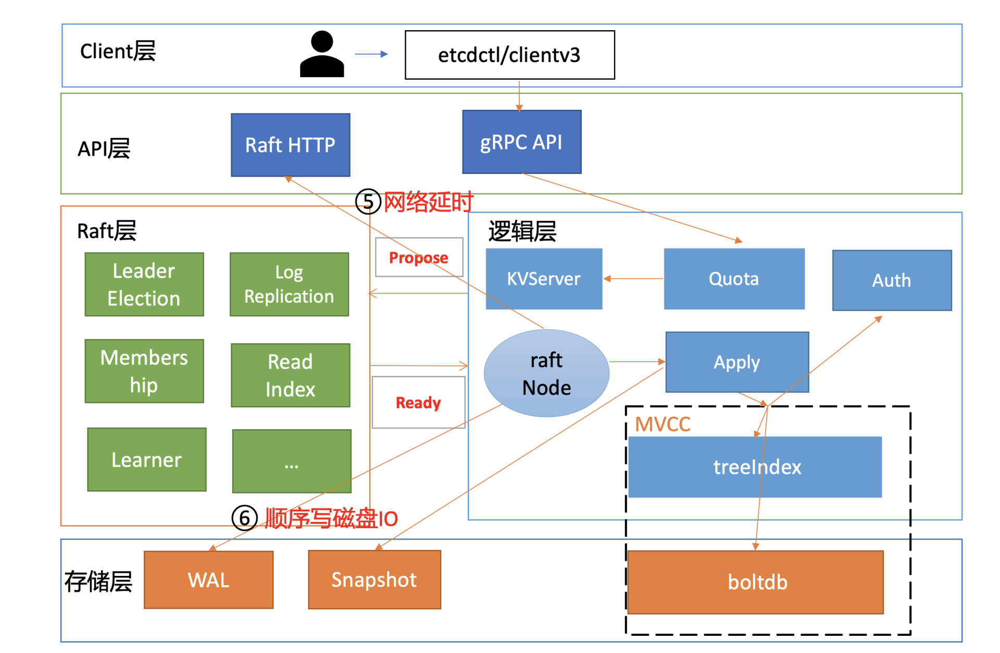
流程五涉及到各个节点之间网络通信，因此节点之间RTT延时对其性能有较大影响。跨可用区、跨地域部署时性能会出现一定程度下降，建议你结合实际网络环境使用benchmark工具测试一下。etcd Raft网络模块在实现上，也会通过流式发送和pipeline等技术优化来降低延时、提高网络性能。
同时，raftNode goroutine也会将待持久化的日志条目追加到WAL中，它可以防止进程crash后数据丢失，也就是流程六。注意此过程需要同步等待数据落地，因此磁盘顺序写性能决定着性能优异。
为了提升写吞吐量，etcd会将一批日志条目批量持久化到磁盘。etcd是个对磁盘IO延时非常敏感的服务，如果服务对性能、稳定性有较大要求，建议你使用SSD盘。
那使用SSD盘的etcd集群和非SSD盘的etcd集群写性能差异有多大呢？
下面是SSD盘集群，执行如下benchmark命令的压测结果，写QPS 51298，平均延时189ms。
benchmark --endpoints=addr --conns=100 --clients=1000 \
put --key-size=8 --sequential-keys --total=10000000 --
val-size=256
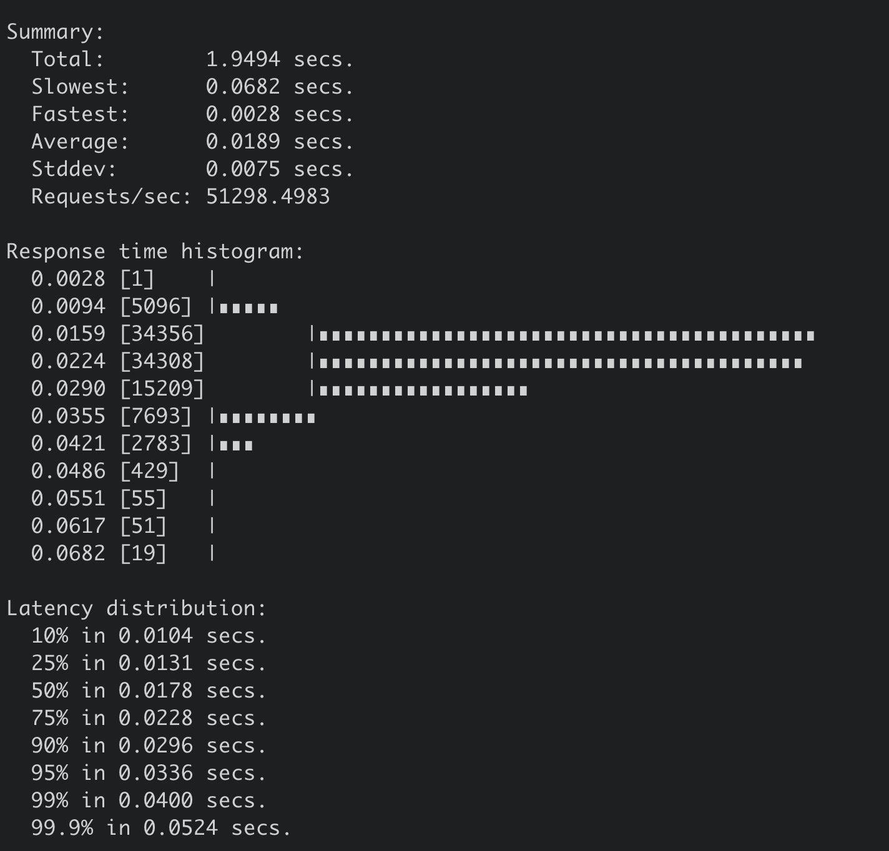
下面是非SSD盘集群，执行同样benchmark命令的压测结果，写QPS 35255，平均延时279ms。
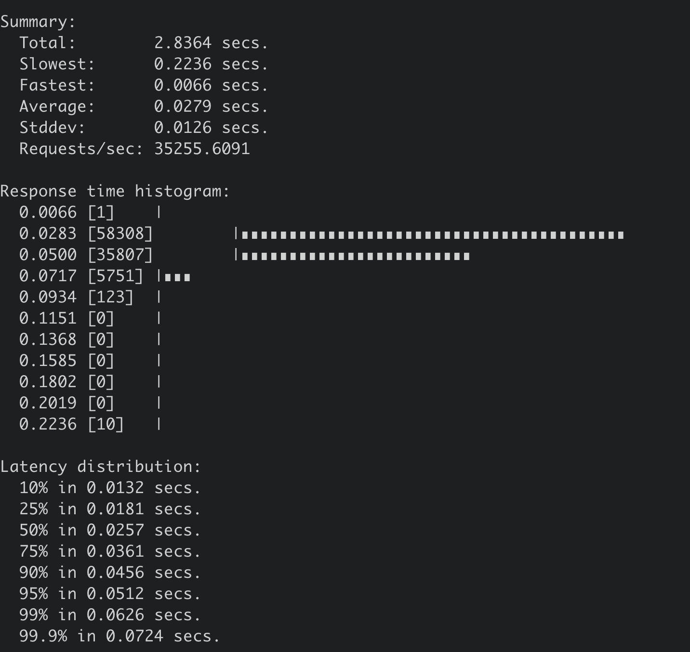
快照参数优化
在Raft模块中，正常情况下，Leader可快速地将我们的key-value写请求同步给其他Follower节点。但是某Follower节点若数据落后太多，Leader内存中的Raft日志已经被compact了，那么Leader只能发送一个快照给Follower节点重建恢复。
在快照较大的时候，发送快照可能会消耗大量的CPU、Memory、网络资源，那么它就会影响我们的读写性能，也就是我们图中的流程七。
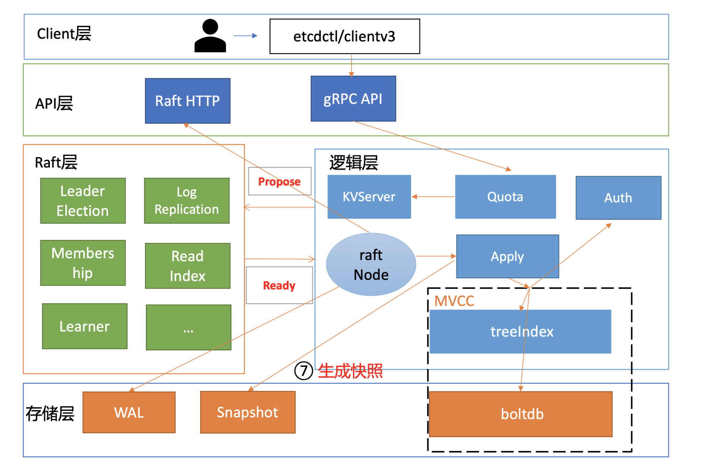
一方面， etcd Raft模块引入了流控机制，来解决日志同步过程中可能出现的大量资源开销、导致集群不稳定的问题。
另一方面，我们可以通过快照参数优化，去降低Follower节点通过Leader快照重建的概率，使其尽量能通过增量的日志同步保持集群的一致性。
etcd提供了一个名为--snapshot-count的参数来控制快照行为。它是指收到多少个写请求后就触发生成一次快照，并对Raft日志条目进行压缩。为了帮助slower Follower赶上Leader进度，etcd在生成快照，压缩日志条目的时候也会至少保留5000条日志条目在内存中。
那snapshot-count参数设置多少合适呢?
snapshot-count值过大它会消耗较多内存，你可以参考15内存篇中Raft日志内存占用分析。过小则的话在某节点数据落后时，如果它请求同步的日志条目Leader已经压缩了，此时我们就不得不将整个db文件发送给落后节点，然后进行快照重建。
快照重建是极其昂贵的操作，对服务质量有较大影响，因此我们需要尽量避免快照重建。etcd 3.2版本之前snapshot-count参数值是1万，比较低，短时间内大量写入就较容易触发慢的Follower节点快照重建流程。etcd 3.2版本后将其默认值调大到10万，老版本升级的时候，你需要注意配置文件是否写死固定的参数值。
大value
当写请求对应的日志条目被集群多数节点确认后，就可以提交到状态机执行了。etcd的raftNode goroutine就可通过Raft模块的输出接口Ready，获取到已提交的日志条目，然后提交到Apply模块的FIFO待执行队列。因为它是串行应用执行命令，任意请求在应用到状态机时阻塞都会导致写性能下降。
当Raft日志条目命令从FIFO队列取出执行后，它会首先通过授权模块校验是否有权限执行对应的写操作，对应图中的流程八。影响其性能因素是RBAC规则数和锁。
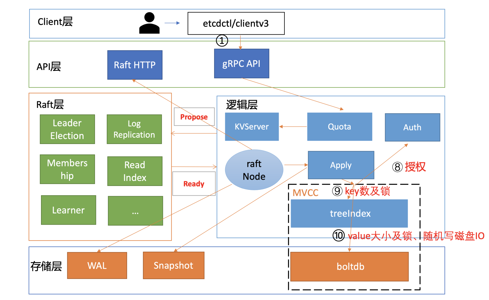
然后通过权限检查后，写事务则会从treeIndex模块中查找key、更新的key版本号等信息，对应图中的流程九，影响其性能因素是key数和锁。
更新完索引后，我们就可以把新版本号作为boltdb key， 把用户key/value、版本号等信息组合成一个value，写入到boltdb，对应图中的流程十，影响其性能因素是大value、锁。
如果你在应用中保存1Mb的value，这会给etcd稳定性带来哪些风险呢？
首先会导致读性能大幅下降、内存突增、网络带宽资源出现瓶颈等，上节课我已和你分享过一个1MB的key-value读性能压测结果，QPS从17万骤降到1100多。
那么写性能具体会下降到多少呢？
通过benchmark执行如下命令写入1MB的数据时候，集群几乎不可用（三节点8核16G，非SSD盘），事务提交P99延时高达4秒，如下图所示。
benchmark --endpoints=addr --conns=100 --clients=1000 \
put --key-size=8 --sequential-keys --total=500 --val-
size=1024000
因此只能将写入的key-value大小调整为100KB。执行后得到如下结果，写入QPS 仅为1119/S，平均延时高达324ms。
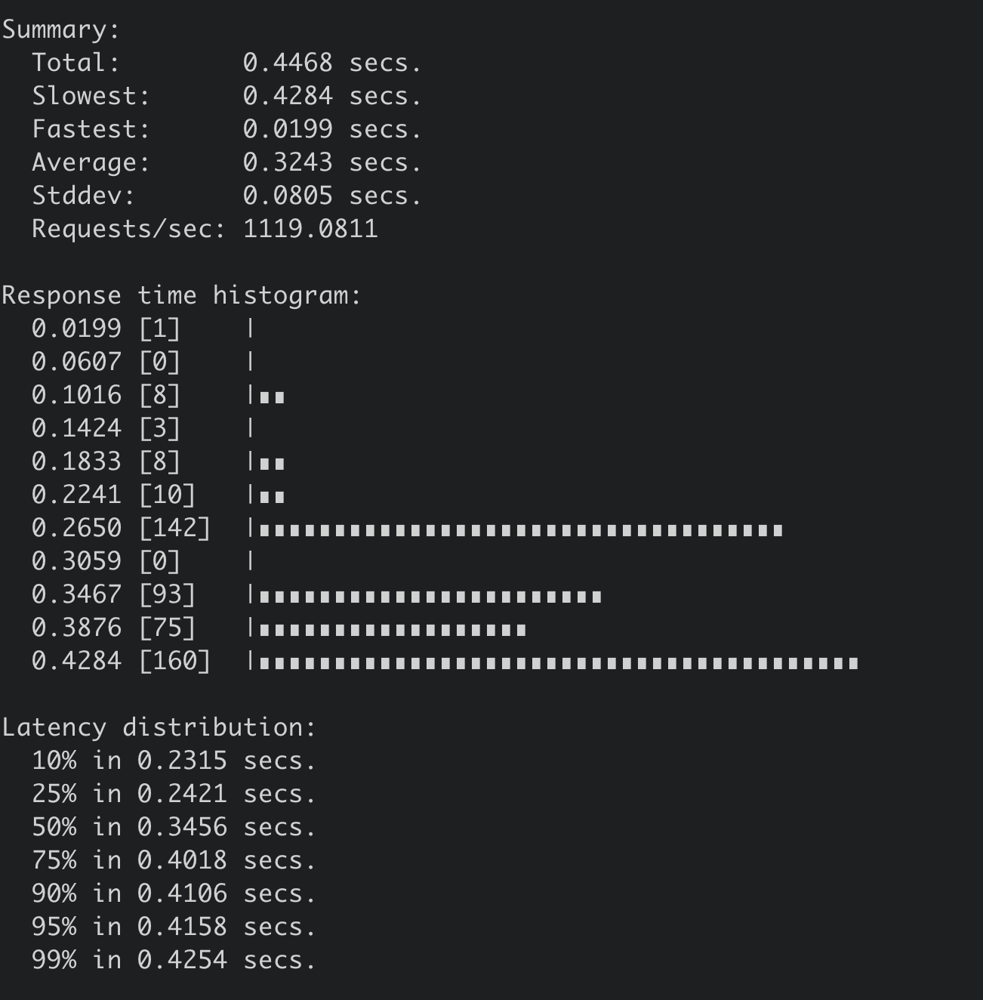
其次etcd底层使用的boltdb存储，它是个基于COW(Copy-on-write)机制实现的嵌入式key-value数据库。较大的value频繁更新，因为boltdb的COW机制，会导致boltdb大小不断膨胀，很容易超过默认db quota值，导致无法写入。
那如何优化呢？
首先，如果业务已经使用了大key，拆分、改造存在一定客观的困难，那我们就从问题的根源之一的写入对症下药，尽量不要频繁更新大key，这样etcd db大小就不会快速膨胀。
你可以从业务场景考虑，判断频繁的更新是否合理，能否做到增量更新。之前遇到一个case， 一个业务定时更新大量key，导致被限速，最后业务通过增量更新解决了问题。
如果写请求降低不了， 就必须进行精简、拆分你的数据结构了。将你需要频繁更新的数据拆分成小key进行更新等，实现将value值控制在合理范围以内，才能让你的集群跑的更稳、更高效。
Kubernetes的Node心跳机制优化就是这块一个非常优秀的实践。早期kubelet会每隔10s上报心跳更新Node资源。但是此资源对象较大，导致db大小不断膨胀，无法支撑更大规模的集群。为了解决这个问题，社区做了数据拆分，将经常变更的数据拆分成非常细粒度的对象，实现了集群稳定性提升，支撑住更大规模的Kubernetes集群。
boltdb锁
了解完大value对集群性能的影响后，我们再看影响流程十的另外一个核心因素boltdb锁。
首先我们回顾下etcd读写性能优化历史，它经历了以下流程：
- 3.0基于Raft log read实现线性读，线性读需要经过磁盘IO，性能较差；
- 3.1基于ReadIndex实现线性读，每个节点只需要向Leader发送ReadIndex请求，不涉及磁盘IO，提升了线性读性能；
- 3.2将访问boltdb的锁从互斥锁优化到读写锁，提升了并发读的性能；
- 3.4实现全并发读，去掉了buffer锁，长尾读几乎不再影响写。
并发读特性的核心原理是创建读事务对象时，它会全量拷贝当前写事务未提交的buffer数据，并发的读写事务不再阻塞在一个buffer资源锁上，实现了全并发读。
最重要的是，写事务也不再因为expensive read request长时间阻塞，有效的降低了写请求的延时，详细测试结果你可以参考 并发读特性实现PR，因篇幅关系就不再详细描述。
扩展性能
当然有不少业务场景你即便用最高配的硬件配置，etcd可能还是无法解决你所面临的性能问题。etcd社区也考虑到此问题，提供了一个名为 gRPC proxy 的组件，帮助你扩展读、扩展watch、扩展Lease性能的机制，如下图所示。
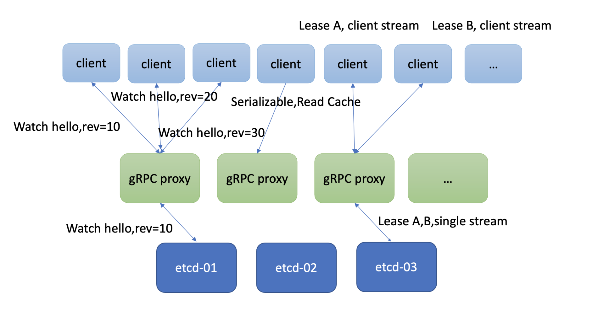
扩展读
如果你的client比较多，etcd集群节点连接数大于2万，或者你想平行扩展串行读的性能，那么gRPC proxy就是良好一个解决方案。它是个无状态节点，为你提供高性能的读缓存的能力。你可以根据业务场景需要水平扩容若干节点，同时通过连接复用，降低服务端连接数、负载。
它也提供了故障探测和自动切换能力，当后端etcd某节点失效后，会自动切换到其他正常节点，业务client可对此无感知。
扩展Watch
大量的watcher会显著增大etcd server的负载，导致读写性能下降。etcd为了解决这个问题，gRPC proxy组件里面提供了watcher合并的能力。如果多个client Watch同key或者范围（如上图三个client Watch同key）时，它会尝试将你的watcher进行合并，降低服务端的watcher数。
然后当它收到etcd变更消息时，会根据每个client实际Watch的版本号，将增量的数据变更版本，分发给你的多个client，实现watch性能扩展及提升。
扩展Lease
我们知道etcd Lease特性，提供了一种客户端活性检测机制。为了确保你的key不被淘汰，client需要定时发送keepalive心跳给server。当Lease非常多时，这就会导致etcd服务端的负载增加。在这种场景下，gRPC proxy提供了keepalive心跳连接合并的机制，来降低服务端负载。
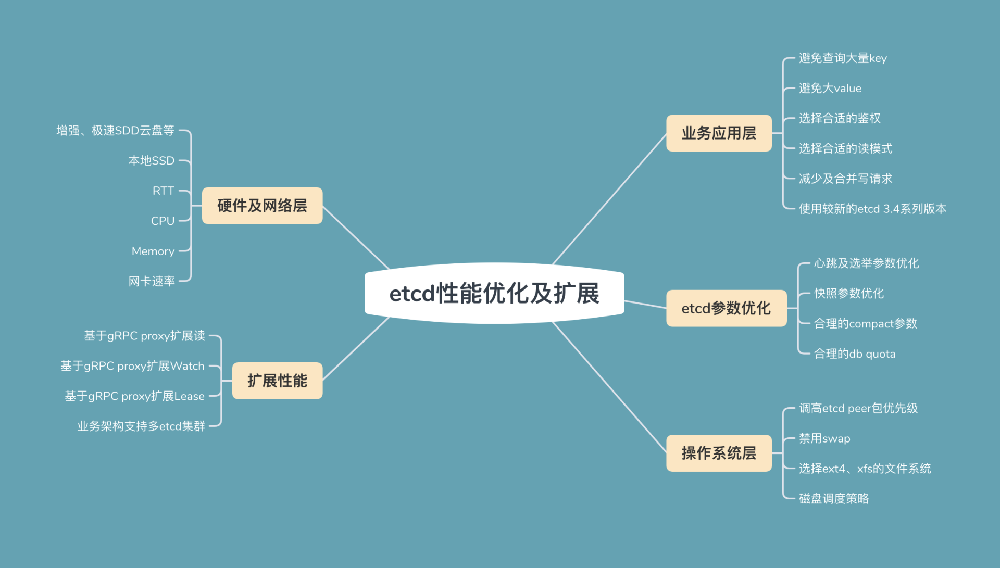